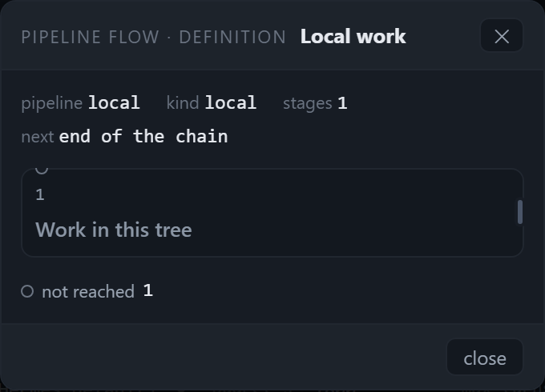
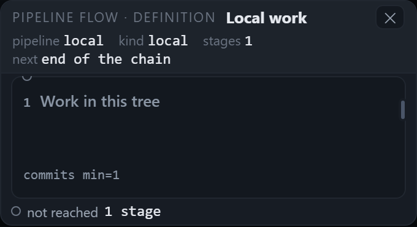
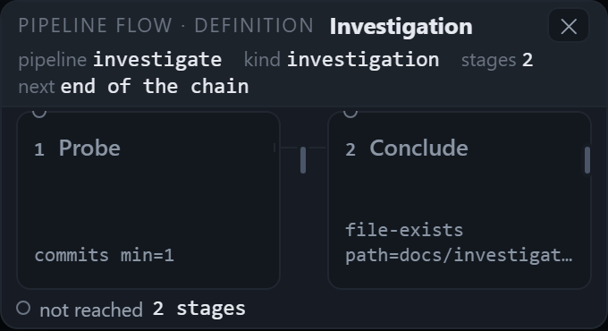
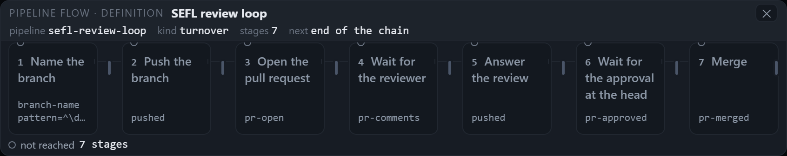
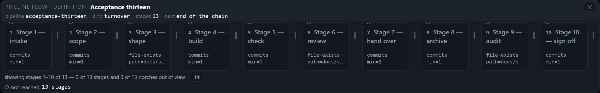
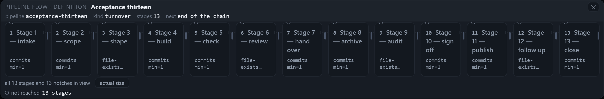
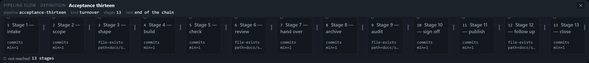

The dialog pays for its drawing
The same harness, the same four stage counts, the same two viewports: the drawing's painted area as a share of the dialog's area, the tallest band of the card that holds nothing, the number of controls that close it, and what the legend's numbers are called. Shot on the panel this branch builds.
The round's ask. The dialog should cost what it shows. The drawing was 26–35% of the card at every stage count, because a quarter to a third of the card was its own chrome — a two-row header, a facts strip, twelve-pixel body padding, and a footer band holding a second "close" button. The drawing had to be at least 55% of the card at 1, 2, 7 and 13 stages, with no band of the card taller than 8 px holding nothing, and the trade had to come from removing chrome, never from shrinking type (11 px floor) or the stage title (13 px floor). One close control, a legend whose numbers carry their noun, and the stage's ordinal on its title's line.
What was there before
- A footer band.
.pmodal-footwas 41 px tall under the drawing: a second "close" button and a status span no caller wrote to. 23 px of the card held nothing at the header/facts seam, and 21 px more between the drawing and the footer. - A facts strip and 12 px of body padding. The four facts sat in the body as their own row, with 10 px of gap under them and 24 px of body padding around the drawing — 40 px of frame for a card whose drawing was 130 px tall.
- Three bands for one stage card. The ordinal had a line of its own under the title, so every card was a strip: 11 px of numeral, a gap, 17 px of title, a gap, and nothing under either.
- Two close controls and a bare numeral. The ✕ in the header and "close" in the footer both closed the same dialog; the legend read not reached 7, a numeral with no noun.
The numbers
Every number is read from the painted page in CSS pixels by
tools/verify-pipeline-dialog-size.mjs. Drawn area is the union of the boxes that carry the drawing —
stage cards, their notches, loop arcs, the legend and the count row — clipped to the scroller's client box and to the
card; dialog area is the card's own box. That definition is the shape round's, unchanged; this round only added
rules on top of it. Tallest empty band is the tallest horizontal strip of the card where no stage, notch, arc,
word or control paints. Close counts the elements inside the card that carry data-pm-close.
Before — the pre-fix commit, measured by the same extended harness
| viewport | stages | card | drawn px² | share | tallest empty band | close |
|---|---|---|---|---|---|---|
| 1280×800 | 1 | 340 × 244.3 | 23,074 | 27.8% | 23 px | 2 |
| 1280×800 | 2 | 340 × 244.3 | 21,661 | 26.1% | 23 px | 2 |
| 1280×800 | 7 | 854 × 257.2 | 63,893 | 29.1% | 23 px | 2 |
| 1280×800 | 13 | 1228.8 × 269 | 116,901 | 35.4% | 23 px | 2 |
| 1824×900 | 1 | 340 × 244.3 | 23,074 | 27.8% | 23 px | 2 |
| 1824×900 | 2 | 340 × 244.3 | 21,661 | 26.1% | 23 px | 2 |
| 1824×900 | 7 | 854 × 257.2 | 63,893 | 29.1% | 23 px | 2 |
| 1824×900 | 13 | 1586 × 240 | 119,085 | 31.3% | 23 px | 2 |
After — this branch
| viewport | stages | card | drawn px² | share | tallest empty band | close | legend |
|---|---|---|---|---|---|---|---|
| 1280×800 | 1 | 340 × 184.2 | 37,800 | 60.4% | 6 px | 1 | not reached 1 stage |
| 1280×800 | 2 | 340 × 184.2 | 35,245 | 56.3% | 6 px | 1 | not reached 2 stages |
| 1280×800 | 7 | 846 × 168.8 | 81,869 | 57.3% | 7 px | 1 | not reached 7 stages |
| 1280×800 | 13 | 1228.8 × 191.8 | 142,933 | 60.6% | 7 px | 1 | not reached 13 stages |
| 1280×800 · fit | 13 | 1228.8 × 202.1 | 164,736 | 66.3% | 7 px | 1 | not reached 13 stages |
| 1824×900 | 1 | 340 × 184.2 | 37,800 | 60.4% | 6 px | 1 | not reached 1 stage |
| 1824×900 | 2 | 340 × 184.2 | 35,245 | 56.3% | 6 px | 1 | not reached 2 stages |
| 1824×900 | 7 | 846 × 168.8 | 81,869 | 57.3% | 7 px | 1 | not reached 7 stages |
| 1824×900 | 13 | 1578 × 168.8 | 152,469 | 57.2% | 7 px | 1 | not reached 13 stages |
Every case clears 55%. The highest is 66.3% (thirteen stages, fitted), the lowest 56.3% (two stages, where the 26 px connector between two 149 px columns is the largest share of the drawing's own area). The tallest band that holds nothing fell from 23 px to 6–7 px, and every band is now a real separation: 3 px of bar padding, 1 px of rule, 2 px of body padding, 2 px between the drawing and the legend.
The pictures
Both sizes are the card's own box, at 2× device scale, from the same run as the table above. The "before" pictures are the pre-fix commit at the same viewport and stage count.
One stage — before and after


1280 × 800 — two, seven and thirteen stages




1824 × 900 — thirteen stages


What changed
| ask | where | what it now does |
|---|---|---|
| The footer band goes | public/pipeline-modal.js:149 |
cardHtml() emits a header, the body, and nothing after it. The status span moved into the header
(it costs nothing while empty, .pmodal-status:empty { display: none }), and there is exactly ONE
data-pm-close control — the header ✕. |
| The header is one band | public/style.css:4203, 4214 |
The bar's first row is the kicker, the title, the status and the ✕; the facts are its second row, full width, wrapping when the width is short. Padding is 3 px top and bottom, the row gap 2 px. |
| The body is the drawing's frame | public/style.css:4221 |
padding: 2px 8px instead of 12 px all round, and the card's width arithmetic follows it: 16 px of
padding and the 2 px border instead of 24 + 2 (public/style.css:4198). |
| The stage card is a tile | public/style.css:4070, 4106 |
--pflow-min-h: 100px, justify-content: space-between: the title on the tile's top, the
one line of meta on its floor. Every tile in a row takes the row's tallest height
(align-items: stretch, public/style.css:4099), so a row has no ragged floor under it. |
| The ordinal joins the title | public/pipeline-flow.js:335 |
.pflow-n is emitted inside .pflow-title as an index preface: it opens the first line,
and the words after it keep the whole column. Stacked, it was a line of its own; beside the title it took 12 px off
every line and turned one three-word title into five lines. |
| The meta line says what ends the stage | public/pipeline-flow.js:302 |
A definition's exit check prints its own name and parameters (commits min=1, branch-exists);
a bundle stage prints its artifact or the gate's decision path. It is the same object the notch carries, read once
by exitGate. |
| The legend's numbers get their noun | public/pipeline-flow.js:423 |
not reached 7 stages, not not reached 7; one stage is singular
(not reached 1 stage). |
| The Tab trap skips what the reader cannot reach | public/pipeline-modal.js:251 |
focusables() filters hidden and unrendered controls. With the footer gone, the hidden
fit press was being counted as a stop; the browser skipped it and the caret left the card. |
| The gate learns the density rules | tools/verify-pipeline-dialog-size.mjs:198, 337 |
The same thresholds the shape round set, plus: share ≥ 55%, no empty band > 8 px, exactly one close control, every ordinal on its title's line, every legend key ending in a count of stages. It prints every band, the tallest one and the close-control count beside each case. |
How the tile's height is judged. The 8 px rule measures bands of the card that hold nothing — strips where no stage, notch, arc, word or control paints. A stage tile's own painted floor is not a band of the card: the space between a tile's title and its exit line IS the tile, and the tile IS the drawing. Counting it as empty would make every tall stage card a failure and push the fix back toward a strip of type with a card around it.
Verification
| run | result |
|---|---|
node --test --test-concurrency=4 test/*.test.js |
1461 tests, 1461 pass, 0 fail. The two unit files this round touches
(pipeline-flow.test.js, pipeline-modal.test.js) were moved deliberately: the legend's
count now carries its noun, and the card's width arithmetic carries 18 px of body and border instead of 26. |
node tools/verify-pipeline-flow.mjs | 49/49 checks — 0 page errors, 0 console errors. |
node tools/verify-pipeline-flow-visible.mjs |
167/167 checks, 145/145 judge lines at both viewports. The Tab-cycle case now counts the card's stops instead of assuming eight. |
node tools/verify-pipeline-dialog-size.mjs |
9 cases measured, 0 failures — the run behind the table and the shots. |
node tools/verify-pipeline-dialog-size.mjs --root <pre-fix export> |
9 cases measured, 40 failures — the red proof: the same harness, run against a git archive
of the pre-fix commit, refuses five lines per case (share, band, close control, ordinal, legend). |
The red proof, in the harness's own words
FAIL 1280x800/local: the drawing is 27.8% of the card, under this round's 55% floor
FAIL 1280x800/local: a 23px band of the card holds nothing (at 33px)
FAIL 1280x800/local: the card offers 2 close controls, not one
FAIL 1280x800/local: a stage ordinal is not on its title's line: [{"sameLine":false,"numTop":161.8,"titleTop":181.7}]
FAIL 1280x800/local: the legend key "not reached 1" does not end in a count of stages
...
--- 9 measured, 40 failures
The after run, in the harness's own words
== 1280x800 · sefl-review-loop (7 stages)
card 846×168.8 · drawing 81869 px² · DRAWN 57.3% of the dialog (the old 1120px frame measured 60.3%)
empty bands 1px@3 24px@1 40px@7 147px@2 166px@2 · TALLEST 7px at 40px · close controls 1
ordinals on the title line: 7/7 · legend "not reached 7 stages"
--- 9 measured, 0 failures
What this round did not do
- The position-mode note and preview still take height. The measured cases are definitions (the Settings tab's flow press). A queue row's dialog carries a sentence explaining its marks and the preview's select and checkbox; those are content, not chrome, and they sit under the drawing where they were.
- The legend stays under the drawing. Moving it into the header would buy another ~20 px at every stage count; it would also separate the key from the picture it keys, so it stayed.
- The tile's floor is 100 px, and that is a design choice. At one stage a tile's own text needs ~60 px; the floor is what makes the drawing the bigger half of a 340 px panel. It is the tile that grew, not the type: the title is still 13 px/500, the smallest painted type is still 11 px.
The ledger behind every number is pipeline-dialog-density-round/ledger.json (this branch) and
pipeline-dialog-density-round/ledger-before.json (the pre-fix commit, same harness); the shots are the files
beside them.